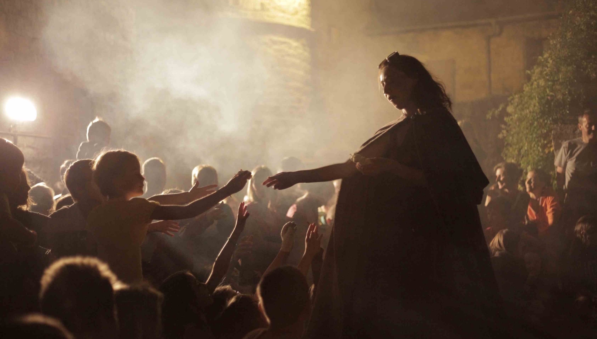

La Cité des Dragons
Juillet/août 2015 à 2018
Spectacle total : marionnettes géantes, musique, théâtre, projections ; cette nouvelle expérience théâtrale hors les murs part à la recherche des dragons endormis dans les ruelles de la cité de Sévérac-le-Château.
Partant d'une rencontre inopinée entre orient et occident, lors de cette déambulation nous explorons, non sans humour, le monde des monstres et des chimères.
Galerie


Le spectacle
Vous ne le savez sans doute pas Encore mais la cité de Sévérac le Château abrite de drôles de personnages. Il y a La Bestiole créée de toutes pièces, il y a aussi la magicienne dévoreuse de chamalow, mais il y a surtout ceux qui se cachent. Il paraît que dans la magie des ruelles gît un dragon solitaire qui ne se laisse apercevoir que par qui veut bien y croire. Ouvrez grands vos yeux et vos oreilles, peut-être en rencontrerez-vous un plus vite que prévu.
Laissez-vous guider par La Bestiole et découvrez l’histoire folle des dragons de la cité de Sévérac. Une déambulation pleine de surprises qui vous fera voyager dans le temps et de par le monde. Magie et musique vous accompagneront tout le long de cette soirée fantastique dont vous vous souviendrez encore longtemps.
Équipe de création
Écriture, mise en scène & costumes / Alice Tabart
Interprétation / Coline Lubin, Joël Sitbon & Alice Tabart
Création musicale / Kristen Annequin
Création vidéo, lumière et soutien technique / Christian Vialaret
Aide à la création des créatures / Emmanuel Borgetto
Stagiaires / Marion Guinot (administration), Pauline Lattaque (assitante mise en scène)
Production
Ce spectacle est créé avec le soutien du Conseil Départemental de l'Aveyron (aide à la résidence).
Nous remercions l'Ecole de Danse Virginie Gonzales ainsi que l'association Sévérac-Vidéo-Son.
Revue de presse


Dates
- 2018
- - lundis 16 et 23 juillet / Sévérac le Château
- - lundis 13 et 20 août / Sévérac le Château
- 2017
- - 2 lundis en juillet / Sévérac le Château
- - 2 lundis en août / Sévérac le Château
- 2016
- - lundis 18 et 25 juillet / Sévérac le Château
- - lundis 8 et 22 août / Sévérac le Château
- 2015
- - lundi 20 juillet/ Sévérac le Château
- - lundis 3, 17 et 24 août / Sévérac le Château